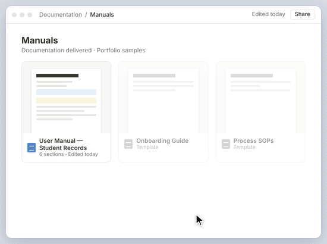

Documentación de Usuario
Una guía clara diseñada para ayudar a los usuarios a entender el software y seguir los procesos con confianza.
Sobre el
proyecto
Me enfoqué en convertir un proceso de software complejo en instrucciones simples y prácticas. Revisé el flujo de trabajo, organicé la información y expliqué cada paso. La guía final ayuda a los usuarios a entender el sistema y a completar sus tareas con mayor facilidad.
Servicios
Documentación de usuario

Detalles del proyecto
Manual de usuario para un sistema de información académica. El proyecto explica los principales filtros y flujos de trabajo que se usan para buscar y gestionar la información de los estudiantes. El contenido se organizó con una estructura clara para usuarios administrativos y académicos.
Lo que hice
Revisé el sistema y documenté cada proceso paso a paso. Expliqué el propósito de los filtros principales, incluidos campus, nivel académico, ciclo, sección, tipo de inscripción y sección del sistema. También revisé el flujo de trabajo e identifiqué áreas que necesitaban instrucciones más claras o mayor consistencia.
Resultado: Reduje en un 35% las preguntas al equipo de soporte sobre el sistema al ofrecer documentación clara, paso a paso.